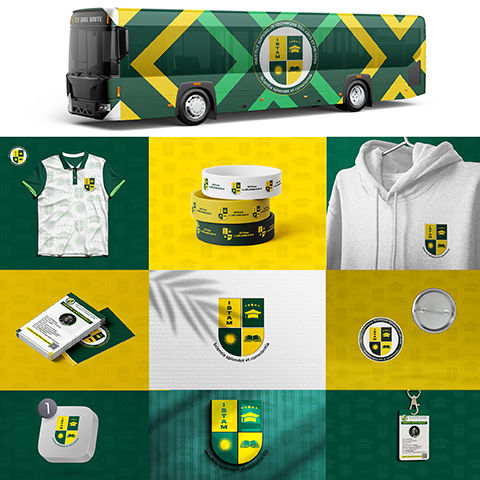
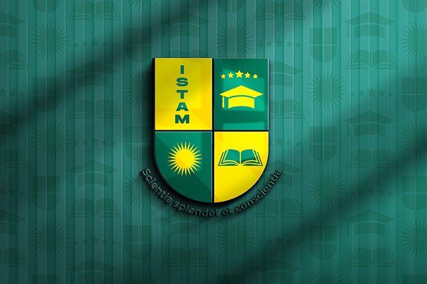

Création de la Charte Graphique de l'ISTAM
Présentation du projet
L'Institut Supérieur Technique des Arts et Métiers (ISTAM) souhaitait disposer d'une identité visuelle cohérente capable de renforcer son image institutionnelle et sa visibilité auprès des étudiants, partenaires et visiteurs. Ce projet consistait à développer une charte graphique complète permettant d'uniformiser la communication de l'établissement sur tous les supports.
Objectifs du projet
- Moderniser l'image de l'institution
- Renforcer la reconnaissance de la marque ISTAM
- Créer une cohérence visuelle sur tous les supports
- Valoriser les valeurs académiques et techniques de l'école
- Développer une communication professionnelle
Analyse de l'identité
L'identité visuelle a été conçue pour représenter à la fois la rigueur académique, l'innovation technique et l'excellence professionnelle. Chaque élément graphique a été étudié afin de transmettre une image sérieuse, moderne et durable.
Palette de couleurs
Le système graphique repose principalement sur :
- Bleu marine : confiance, professionnalisme et stabilité
- Blanc : clarté et lisibilité
- Rouge institutionnel : dynamisme et ambition
Typographie
La typographie sélectionnée privilégie la lisibilité et la modernité afin d'assurer une communication efficace aussi bien sur les supports imprimés que numériques.
Applications graphiques
La charte graphique a été conçue pour être utilisée sur différents supports :
- Cartes de visite
- Papeterie institutionnelle
- Supports de communication
- Réseaux sociaux
- Signalétique
- Site web



Résultat final
Le projet a permis de doter l'ISTAM d'une identité visuelle moderne, cohérente et professionnelle capable d'accompagner son développement et sa communication sur le long terme.
Conclusion
Ce projet illustre l'importance d'une charte graphique structurée pour les institutions souhaitant renforcer leur crédibilité et leur visibilité. Chez Afro Vecteur, nous accompagnons les organisations dans la création d'identités visuelles fortes et durables.
Vous avez un projet similaire ?
Afro Vecteur vous accompagne dans la création d'identités visuelles, de packagings et de supports de communication professionnels.
Demander un devis